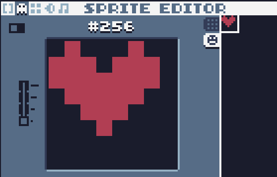
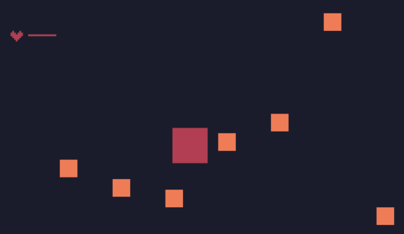

血条生命值
对p增加一个b属性为20，代表血为20。
p={
x=10,
y=10,
vx=0,
vy=0,
w=20,
h=20,
c=2,
b=20, --blood
r="p" --role=player
}
updte变为：
function update()
if p.b==0 then
return false
end
for i,v in ipairs(gos) do
v.x=v.x+v.vx
v.y=v.y+v.vy
for ii,vv in ipairs(gos) do
if checkCollision(v,vv) then
if v.r=="p" and vv.r=="e" then
table.remove(gos,ii)
v.b=v.b-1 --血条减少
end
end
end
end
end
按F2，进入精灵编辑。切换到精灵tab，在#256号区域绘制一个心形：

增加一个绘制血条的方法：
function draw_blood()
-- draw blood
spr(256,10,10,0,1,0,0,1,1)
rect(20,12,p.b,1,2)
end
其中，spr为绘制精灵函数。
spr(精灵编号,x坐标,y坐标,透明色,缩放倍数,剪切x,剪切y,宽度,高度)
spr(256,10,10,0,1,0,0,1,1)
需要注意的是，在精灵编辑器中，8*8为1个格子。宽度8个像素占1格为1，如果16个像素则占2格为2。该参数为整数，不能有小数。
draw变为：
function draw()
for i,v in ipairs(gos) do
rect(v.x,v.y,v.w,v.h,v.c)
end
draw_blood()
end
此时，效果如下：

可以看到，当红色玩家遇见黄色敌人时，敌人消失，玩家血条会减少。
请继续阅读下一篇《游戏结束及重新开始》